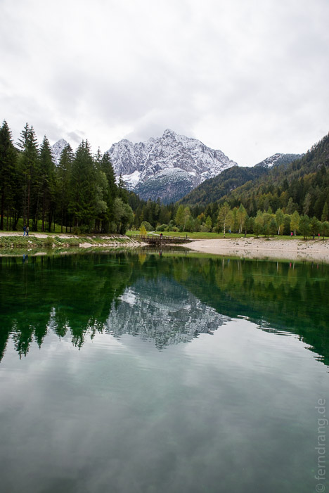
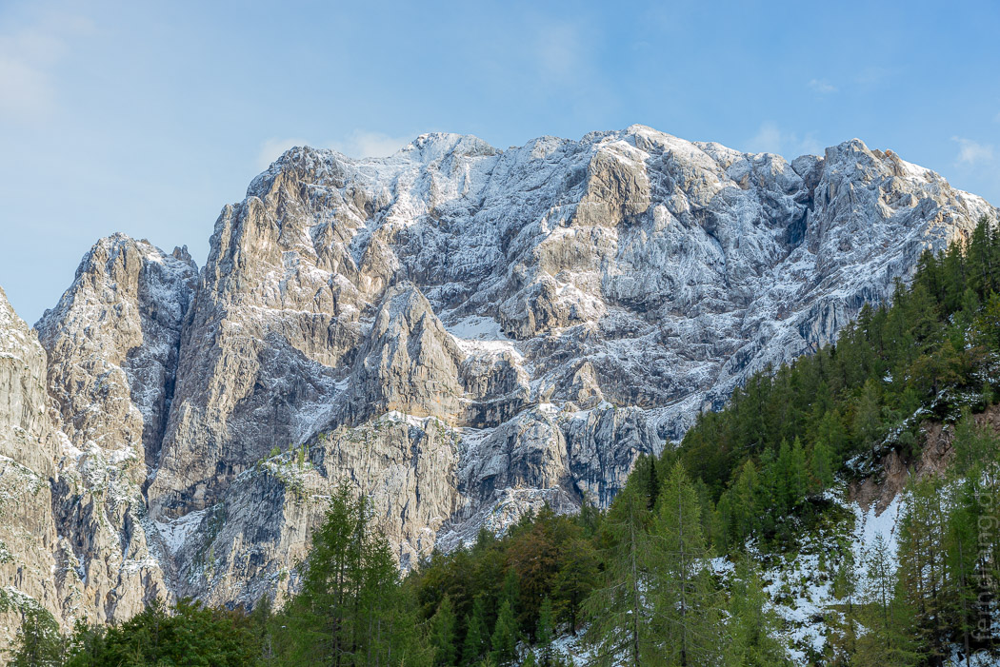
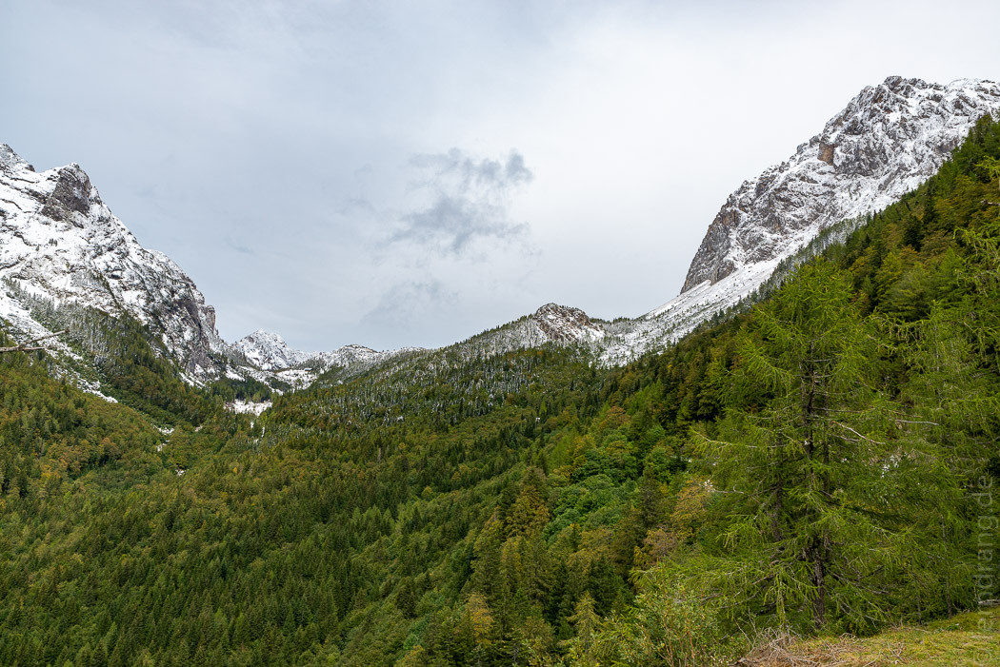
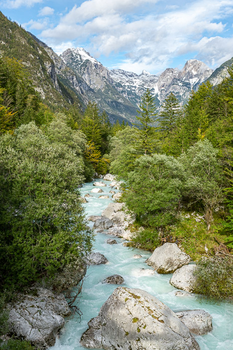
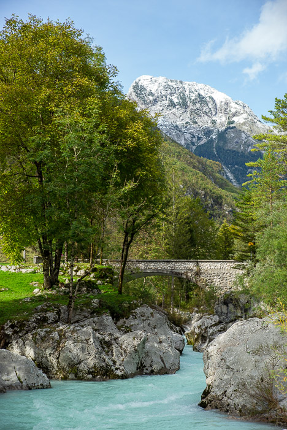
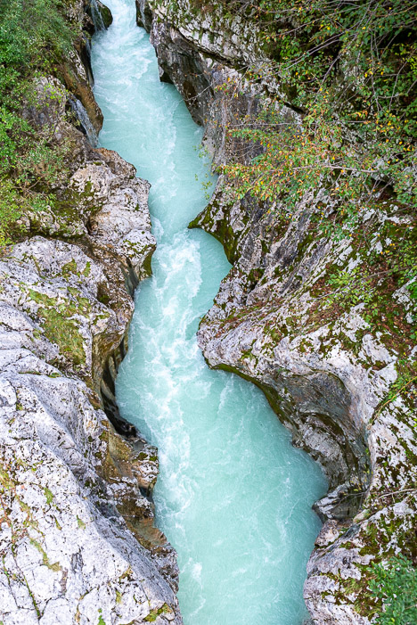

Wieder hatte das Wetter unsere Reiseroute beeinflusst. Statt direkt nach Norden über Graz nach Klagenfurt zurück zu fahren, haben wir einen großen Umweg über Ljubljana an die Nordwestgrenze gemacht. Wir wollten den Besuch im Soča-Tal auf der Rückreise nachholen. Tatsächlich hatte das Wetter mitgespielt und sogar Anflüge blauen Himmels im Repertoire.
Überraschender aber war wie steil die Straße hinter Kranjska Gora hochführte. In 50 durchnummerierten Serpentinen haben wir uns auf über 1700m herauf- und wieder herunter geschraubt. In der Nacht war Schnee gefallen und die Berge schlummerten friedlich unter einer Decke aus Puderzucker. Die Berge, in denen wir noch vor einer Woche geschwitzt hatten, waren nicht wiederzuerkennen.
 Die kleine Soča entspringt in diesen Bergen und schießt in eisigem Blau durch die schmalen Täler. Die Straße führt kilometerlang am Fluss entlang. Alle paar Minuten mussten wir anhalten und Fotos machen und staunen. Schade, dass wir hier keine längeren Wanderungen mehr machen konnten.
  Der Rückweg nach Österreich war genauso harmlos wie die Einreise. Das Navi hat uns versehentlich über einen Grenzübergang geleitet, der nur für Österreicher und Slowenen geöffnet ist. Unser heimisches Kennzeichen hat den Grenzer gar nicht erst aus dem Häuschen gelockt.